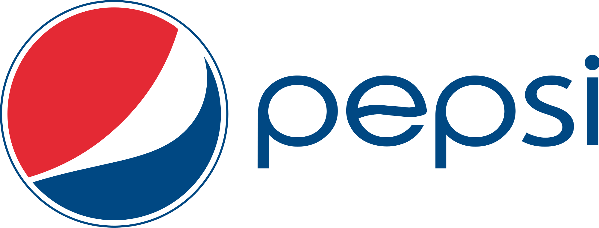

Home
About
Items
Contact
PEPSI-COLA MADE WITH REAL SUGAR
Its commercials as for its never-ending battle with rival
soft drink Coca-Cola...
Buy now
Pepsi-Cola Made with Real Sugar, originally called Pepsi Throwback And still branded that way in some markets
Is a soft drink sold by PepsiCo.